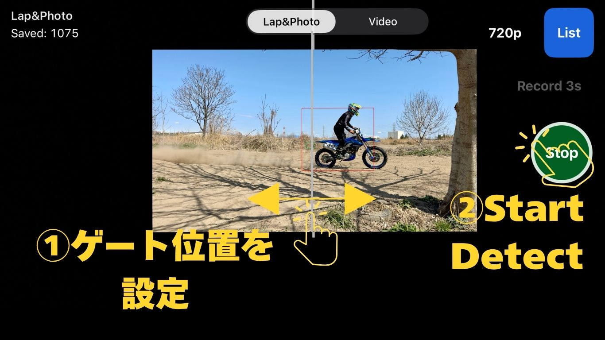
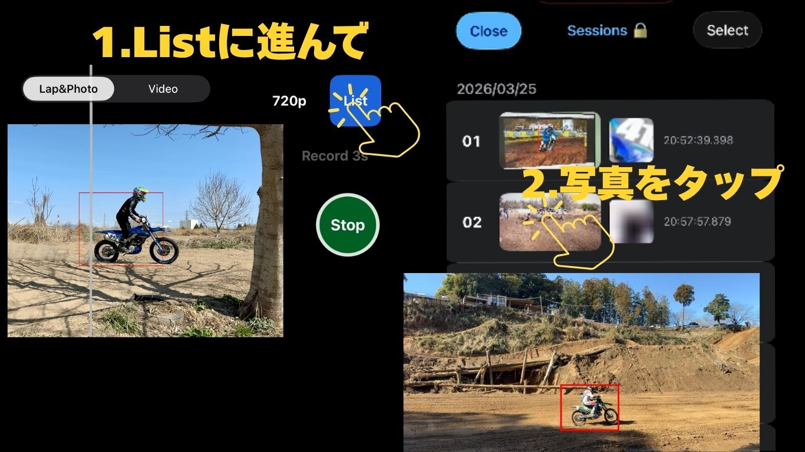
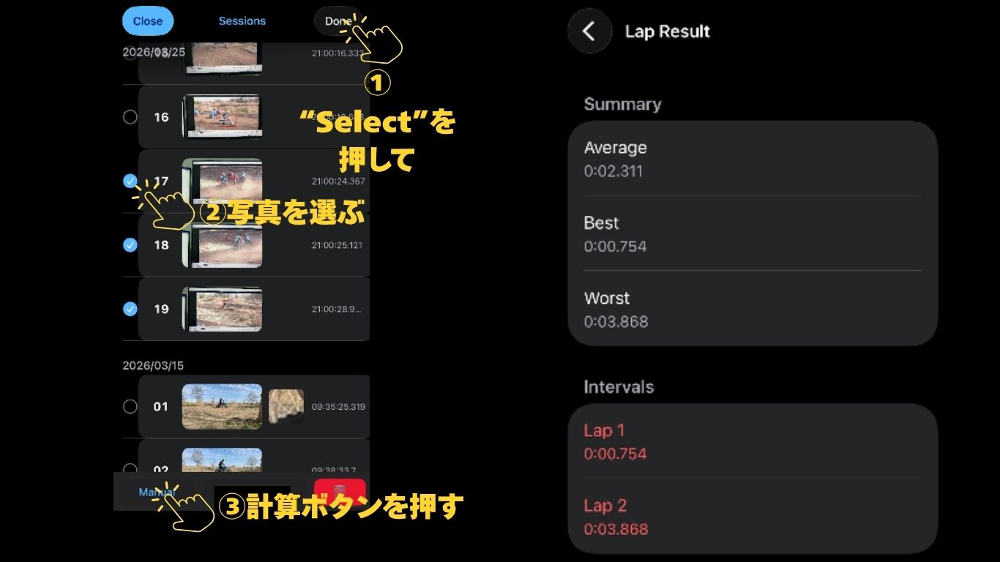
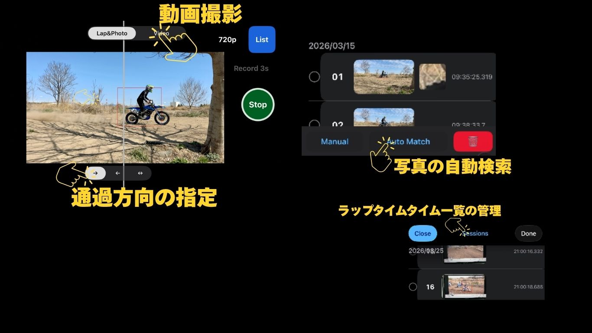
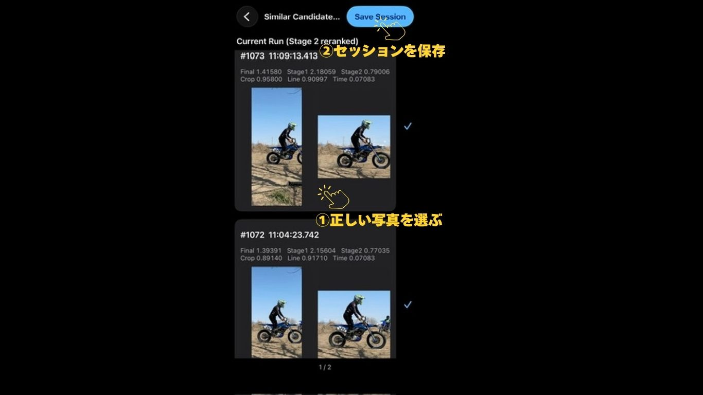
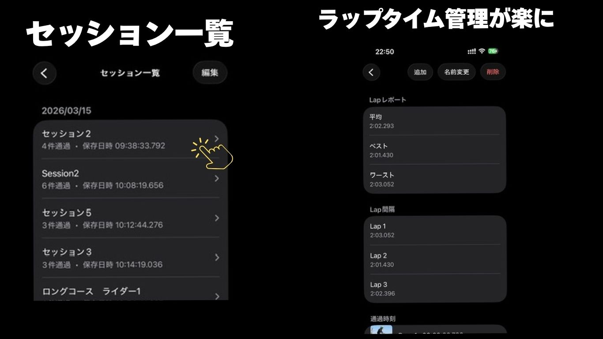

Step 1
ラインを合わせて検出を開始
ライダーがカメラの前をしっかり通る位置にiPhoneを設置します。 パスラインを調整して検出を開始し、走行後にPass Listを開きます。

Ponderlessは、モトクロスやエンデューロの練習向けに作られた ゲート不要のラップタイマーです。 iPhoneをコース脇に置いて走るだけで、通過シーンを記録し、 走行後にラップタイムを確認できます。
トランスポンダー不要。タイミングゲート不要。必要なのはiPhoneだけ。
ライダーがカメラの前をしっかり通る位置にiPhoneを設置します。 パスラインを調整して検出を開始し、走行後にPass Listを開きます。

Pass Listには記録された通過画像が時系列で表示されます。 各通過をタップすると、より詳しく確認できます。

同じライダーの通過を2つ以上選ぶと、ラップタイムを計算できます。 計算結果はラップ結果画面で確認できます。

Proでは、動画モード、走行方向設定、自動マッチ、セッション保存などが使えます。 よりスムーズに計測・整理したい方におすすめです。

提案された候補を確認し、正しい通過を選択できます。 選んだ結果はそのままセッションとして保存できます。

保存したセッションを使うと、ラップ結果を整理しやすくなり、 後から見返すのも簡単になります。

iPhoneひとつで、自分だけでもラップタイムを計測できます。
App Storeで見る